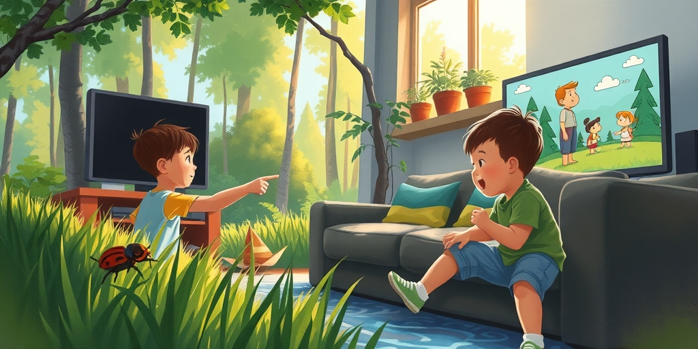
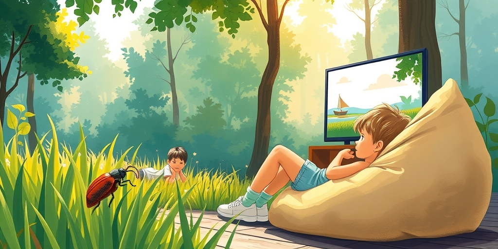
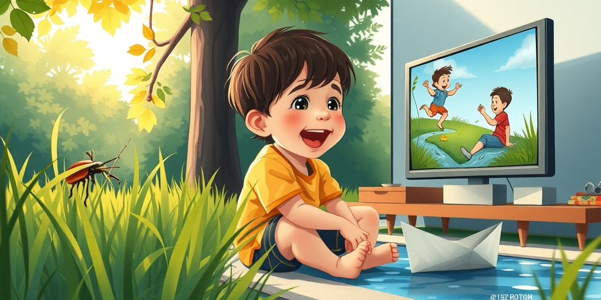
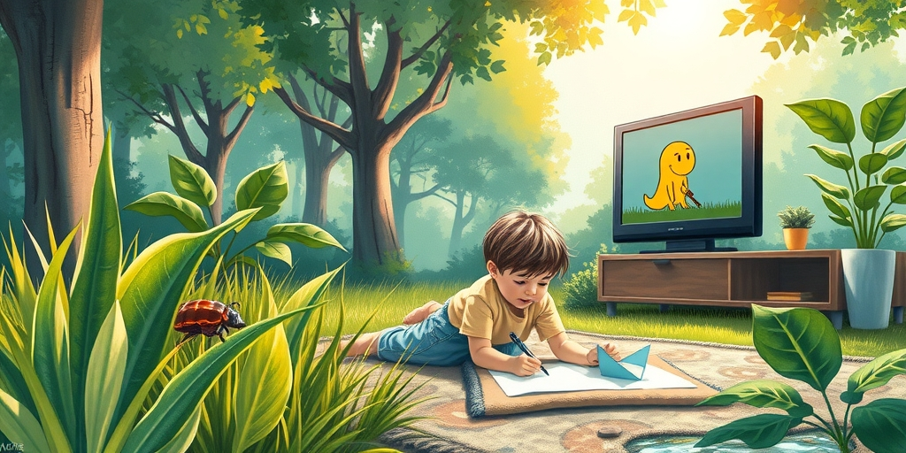
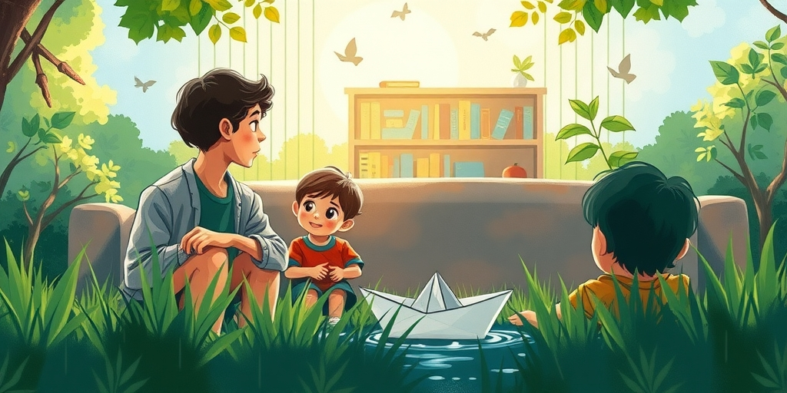

小汪老师的成长洞察 · 属于你的成长专栏
那天我走过客厅，瞥了一眼孩子痴迷的动画片。画面简陋得像二十年前的小游戏，剧情简单到令人发指。我的孩子却目不转睛。我突然意识到：我评判这部动画用的是我的大脑，而真正在看的是另一个完全不同的操作系统。你以为孩子在看动画，其实他在进行一场大脑的建造工程。你和孩子之间隔着三十年的认知进化。你看画质、他看信息密度；你看创意、他看可预测性。这不是品味的差距，是大脑发育阶段的错位。

开心锤锤每集套路几乎一样。主角遇到日常情境，发生夸张肢体搞笑，最后以简单道理收尾。成人看完第一集就能猜出后面一百集。五分钟审美疲劳。孩子却连续看二十集不眨眼。这个反差让无数家长困惑。
成人的大脑被足够多的模式训练过，追求新鲜和意外。孩子正好相反。他刚到一个到处是未知的世界，大脑的首要任务是建立模式。当一个动画片的结构高度可预测，对成人来说是没创意，对孩子来说是我又猜对了。每一次猜对都是一次多巴胺释放。他不是在看故事，是在验证自己的预测能力。
你看到的无聊重复，是他大脑里正在加固的神经通路。成人用新刺激维持突触活跃度，孩子用重复刺激建立突触连接。前者是维护，后者是建造。你忘了自己小时候也曾痴迷于某个简单到极点的动画。你只是忘了施工时的噪音在外人听来有多刺耳，但里面的工人忙得不可开交。

成人吐槽画风粗糙，但画面简陋的背面是视觉信息密度低。人物造型简单，背景干净，动作明确。这意味着孩子的视觉系统不需要在每一帧里处理大量细节。成年人已经拥有视觉信息的过滤和优先级排序能力，孩子没有。信息过于丰富的画面对孩子来说不是好看，是累。
你看迪士尼电影时觉得画面真丰富，但一个四五岁的孩子在同样的画面面前可能是不知道该看哪。一个制作精良的皮克斯短片，有时反而不如一个粗糙的短视频更能抓住幼儿。不是前者不够好，是后者刚好匹配了孩子当前的处理能力。简洁的画面让他能轻松抓到所有元素。
你的视觉皮层发育了三四十年，一秒能处理大量信息，粗糙动画只喂了它十分之一。孩子的硬件配置不同，这个粗糙程度刚好是能处理的极限。一个背景干净、角色简单的画面，他的大脑刚好能抓到所有元素。你们看同一张画面，感受完全不同。你觉得信息不足，他觉得刚刚好。

小孩子为什么对摔倒、撞头、夸张表情笑得前仰后合？成人觉得品味低。但这不是品味问题，是他的大脑在目前阶段只有这把钥匙能打开幽默的门。抽象语言幽默需要高级语言能力和心智理论，这个能力要到青少年期才逐渐成熟。
皮亚杰理论中，幼儿处于前运算阶段和具体运算阶段之间。双关、反讽、冷幽默都需要复杂的认知解码。肢体幽默不需要任何抽象解码。你看到一个球砸到人头上，大脑直接触发笑点。这是硬编码的。所以小孩笑点低不是品味问题，是他的装备还没到。
你给他看伍迪·艾伦，他一点不笑。不是他不懂幽默，是你给的幽默需要他还没有的装备。你笑你的冷幽默，他笑他的撞头。两套操作系统互不兼容。成人觉得低级的东西，恰好是儿童幽默感的起点。

成年人习惯了消费精制品，把高完成度当作好东西的标志。孩子没有这根弦。他看到画面简单的动画时，视觉皮层产生的第一个信号不是这画得不好，而是这个人画的跟我差不多。这不是审美能力差，这是可达性在发挥作用。
精制的动画像一座玻璃幕墙大楼。你能看，但你知道你进不去。粗糙的动画像一扇开着的门。你觉得你也能做。这种我也可以的亲近感，是专业级动画无法提供的。孩子不在乎线条是否精细，他在乎的是这个角色的表情我看得懂吗，这个动作我能预测吗，这个场景我见过吗。
你判断的坐标系是精致，他判断的坐标系是理解。可达性在儿童审美中占有重要位置。一个孩子看着粗糙动画，心里可能正在想：我画的也差不多。这种亲近感让动画不再是远距离的观赏品，而成了可以参与的游戏。

当你们坐在一起看同一部动画时，生理层面看的就不是同一个东西。你的审美体系被社会训练过，你知道什么是好的色彩搭配，什么是精细的线条。孩子没有这个体系。他在乎的是对不对，不是好不好。他的三条审美基石是：表情看得懂吗，动作能预测吗，场景我见过吗。
重复的本质被成人误解。每一次重复观看同一集，都不是浪费时间，而是在加固神经通路。一个孩子能把同一集动画片看五十遍。在你眼里这是脑子空白，在神经科学看来这是突触正在被反复加强。成人用新刺激维护突触，孩子用重复刺激建造突触。你觉得无聊的事，他的大脑正在用你做建筑的方式做施工。
你还在用稀缺性逻辑评价他。你的娱乐选择太多，潜意识里在算账。孩子的娱乐选择极为有限，一个能看懂、能预测、能笑出来的动画片就是最好的东西。他没有错失恐惧，只有刚好满足。下一次你再瞥一眼他痴迷的粗糙动画，你看到的将不再是一个无聊的片子。你会看到一个正在疯狂建造模式识别、行为预测和社会理解能力的小小工程现场。你当年也是在这样的工程现场里被建起来的。你只是忘了施工时的噪音。
给家长的小提示
下一次，当你的孩子又点开那部你忍无可忍的粗糙动画时，先别急着关掉。你看到的无聊重复，可能是他大脑里一场紧张的施工。你当年也是在这样的施工声里被建起来的。只是现在，你成了那个嫌噪音太吵的邻居。孩子不是在看动画，他是在用动画当砖块，搭建他理解这个世界的第一座房子。你的任务不是替他选砖，是别拆他的脚手架。
小汪老师的成长洞察 · 属于你的成长专栏